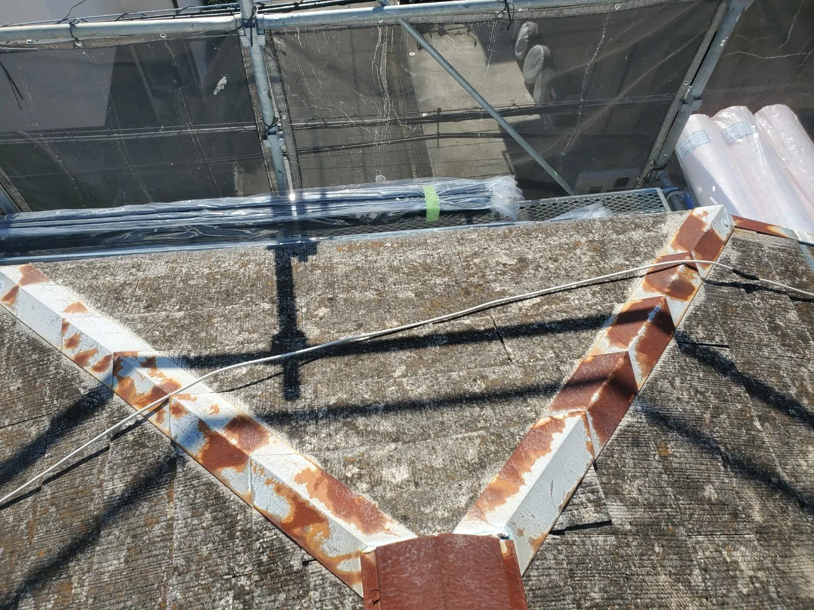
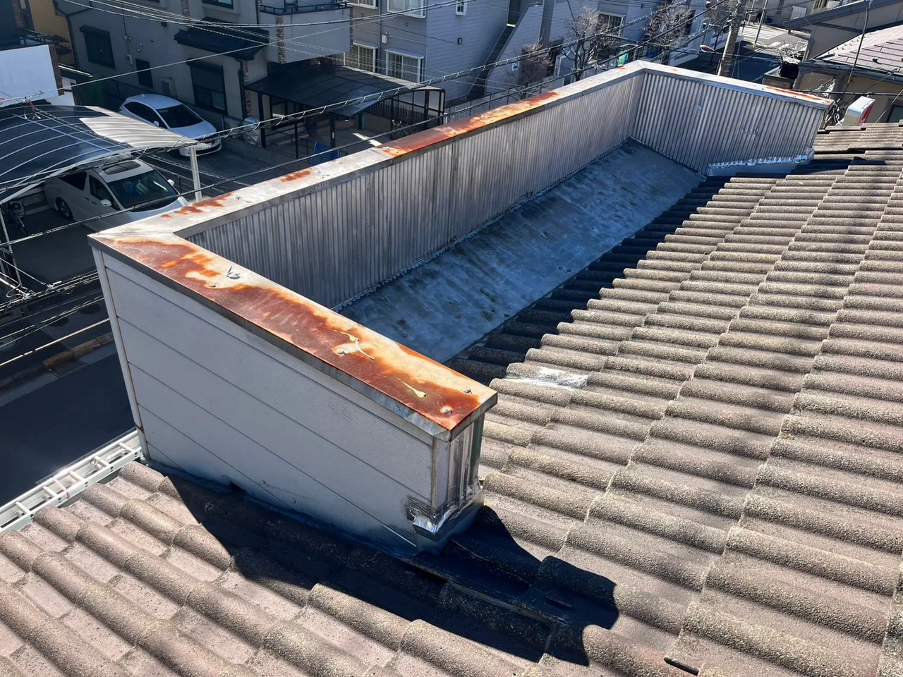

FAQ
屋根修理・雨漏りのよくある質問
さいたま市を拠点に埼玉県内の屋根工事を承る大沼商会が、雨漏りの症状、カバー工法と葺き替えの違い、見積もり・工事費用などの疑問にお答えします。関連記事や施工事例もあわせてご覧いただけます。
雨漏り・屋根の傷み
雨漏りしていて急ぎの場合は、どうすればよいですか？
お急ぎの場合は048-708-0484へお電話ください。状況を伺ってご案内します。担当不在の場合は折り返しご連絡します。雨漏りの調査は、室内の症状と屋根全体の状態を確認して進めます。ご自身で屋根に上って調べたり、補修したりすることはお控えください。
天井のシミや壁紙の浮きは、雨漏りのサインですか？
天井や壁のシミ、壁紙の浮き、天井から落ちる水滴は、雨漏りの際に見られる症状です。ただし、見た目だけで侵入箇所や修理方法は決められません。気付いた症状をお伝えいただき、現地調査で原因を確認します。
雨漏りは部分補修で直せますか？屋根全体の工事が必要ですか？
傷みが一部分に限られていれば、部分補修で対応できる場合があります。一方、屋根全体や下地の劣化が進んでいる場合は、一箇所を直すだけでは別の箇所から雨漏りすることもあります。原因と傷みの範囲を調べ、必要な工事をご説明します。
棟板金の錆びや浮きが気になります。交換が必要ですか？
棟板金は、屋根の頂点を覆う金属の部材です。錆びの程度や固定部分の状態によって、塗装・補修で対応するか、交換するかが変わります。浮きや剥がれがある場合も、その箇所だけでなく周辺の傷みを確認します。ご自身で屋根に上らず、ご相談ください。

屋根の周囲の壁や、屋根と壁の境目から雨漏りすることはありますか？
屋根材の面だけでなく、壁との取り合いや継ぎ目も調査の対象です。屋上や屋根の周囲に立ち上がった壁は「パラペット」と呼ばれ、雨水が当たる部分の劣化から浸水する場合があります。室内で水が見える場所と、外から雨水が入る場所が一致するとは限らないため、建物の状態を確認します。

カバー工法・葺き替え・板金工事
屋根カバー工法と葺き替えは、何が違いますか？
カバー工法は既存の屋根材を残して、その上に新しい屋根を施工する方法です。葺き替えは既存の屋根材を撤去し、新しい屋根材へ交換する方法です。葺き替えでは、撤去後に下地の状態を確認して必要な補修ができます。屋根材・下地・雨漏りの状態に合わせて工法を検討します。
どんな屋根でもカバー工法にできますか？
すべての屋根に施工できるわけではありません。既存屋根の種類や形状、下地の傷み、雨漏りの状況、過去にカバー工法を行っているかなどを確認します。下地の補修が必要な場合などは、葺き替えを含めて検討します。築年数だけで可否を決めず、現地調査で判断します。
瓦屋根を金属屋根に変えることはできますか？
瓦を撤去し、新しい金属屋根材へ葺き替える方法があります。既存の瓦や下葺き材を撤去したうえで下地を確認し、必要な補修、防水シート、新しい屋根材の施工へ進みます。具体的な材料や工事範囲は、建物の状態を確認してご提案します。
軽い金属屋根を使えば、カバー工法でも屋根は軽くなりますか？
既存の屋根を残して新しい屋根材を重ねるカバー工法では、もとの屋根より軽くなるわけではありません。重ねる分の重量も踏まえて施工できるかを確認します。屋根を軽くすることが目的の場合は、既存の屋根材を撤去する葺き替えと区別して検討する必要があります。
葺き替えと葺き直しは違う工事ですか？
葺き替えは新しい屋根材へ交換する工事です。葺き直しは既存の屋根材を一度取り外し、下地や下葺き材などを補修してから、使用できる屋根材を再び施工する方法です。既存の屋根材を再利用できる状態かどうかも含めて、現地で確認します。
野地板・ルーフィングとは何ですか？
野地板は屋根材を支える下地の板で、ルーフィングはその上に施工する下葺き材・防水シートです。屋根の仕上げ材だけでなく、こうした見えなくなる部分も雨水の侵入を防ぐために大切です。葺き替えでは、既存屋根を撤去した後の下地の状態も確認します。
見積もり・費用・工事の進め方
相談・現地調査・見積もりは無料ですか？
はい。ご相談から現地調査、お見積もりの作成までは無料です。お見積もりを見たうえで、工事を依頼するかご検討いただけます。工事の内容が決まっていない段階でもご相談ください。
他社の見積もりと比較してもよいですか？何を比べればよいですか？
はい。すでに他社のお見積もりをお持ちの方もご相談いただけます。合計金額だけでなく、工法、使う材料、数量、工事範囲などの条件をそろえて比較することが大切です。「工事一式」だけでは内容を比べにくいため、内訳や、なぜその工事が必要なのかの説明も確認しましょう。
屋根修理・屋根リフォームの費用はどのくらいかかりますか？
屋根の大きさや傷みの状態、選ぶ工法・材料、必要な工事範囲などで変わります。まず現地を確認し、必要な工事内容と費用をお見積もりでご説明します。部分補修と屋根全体の工事では範囲が異なるため、価格だけでなく提案内容もご確認ください。
屋根工事には何日くらいかかりますか？
工法や工事範囲、下地の補修の有無などによって変わります。葺き替えは既存屋根の撤去などの工程があり、カバー工法とは作業内容が異なります。一律の日数ではご案内できないため、現地調査後の打ち合わせで予定をご確認ください。
工事中の音や近隣への影響が心配です。相談できますか？
はい。工事に伴う音や作業範囲など、気になることは打ち合わせ時にお伝えください。屋根工事では撤去や施工に伴う音が生じる場合があります。塗装を含む工事ではにおいなども関係するため、予定する工事内容と近隣への配慮について事前に確認します。
工事後の保証や、気になる点についてはどうすればよいですか？
お引き渡し後に気になる点があれば、大沼商会へご連絡ください。保証の内容・期間・対象条件は工事によって異なります。ご契約前に、今回の工事に適用される内容をご確認ください。
対応地域・大沼商会への相談
どの地域から相談できますか？
さいたま市南区を拠点に、埼玉県内を中心に承っています。県外は近隣地域に限り、建物の所在地を伺って対応可否をご案内します。ご相談の際は市区町村をお知らせください。
小さな補修や、雨樋だけでも頼めますか？
はい。屋根全体の葺き替えやカバー工法のほか、棟板金の交換・屋根の部分補修・雨樋交換なども承っています。気になる箇所をお聞かせください。
一級建築板金技能士とは、どのような資格ですか？
訪問業者に「屋根が壊れている」と言われました。相談してもよいですか？
はい。突然指摘されて不安になった場合もご相談ください。その場で契約を急がず、信頼できる業者に状態を確認してもらい、工事内容と見積もりを検討することが大切です。大沼商会では、訪問販売や押し売りのような営業は行っていません。